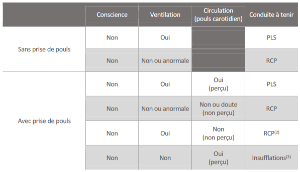

Définiton :
Une personne est en arrêt cardiaque (AC) lorsque son cœur ne fonctionne plus ou fonctionne de façon anarchique, ne permettant plus d’assurer la circulation du sang dans l’organisme et en particulier l’oxygénation du cerveau.
Causes :
Risques et Conséquences :
La vie d’une victime en arrêt cardiaque est, en quelques minutes, menacée.
Quand la respiration d’une victime s’arrête et quand son cœur cesse d’être efficace, l’air n’arrive plus au
niveau des poumons, le sang cesse de circuler et l'alimentation en oxygène du corps entier n’est plus
assurée
Progressivement, ces lésions deviennent irréversibles, rendant les chances de survie quasiment nulle en
quelques minutes (environ huit minutes chez l’adulte)
Signes :
L’identification des signes de l’arrêt cardiaque est réalisée en quelques secondes au cours du bilan d’urgence vitale.
Parfois, ces signes peuvent être accompagnés d’une courte période de mouvements saccadés de la victime, ressemblant à des convulsions.
La recherche d’un pouls n’est pas systématique pour caractériser l’arrêt cardiaque (1) . Toutefois, si elle est effectuée, son évaluation simultanée à la recherche de la respiration ne doit jamais dépasser 10 secondes et elle ne doit pas retarder la mise en œuvre des gestes de secours déclinés dans le tableau suivant.
En cas d’absence ou de doute sur la présence du pouls chez une victime qui a perdu connaissance, même avec des mouvements ventilatoires, il faut débuter ou poursuivre une RCP
Si la victime se réveille :
Le principe de secours sera identique mise à part :
Mise à jour le 20/04/2022
Développé par l'association Secouristes UTT - Sec'UTT